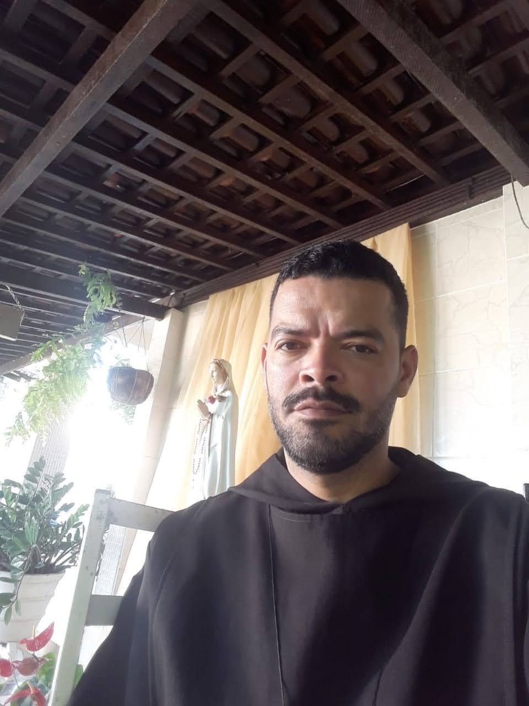

Nosso Histórico
“Descobri que não nasci para viver sozinho, mas que deveria partilhar da minha vida com os irmãos.”
Irmão Francisco Vítima do Amor
Esta bela frase do nosso querido e amado Pai Fundador, já revela uma das motivações que Deus colocou em seu coração para suscitar através dele este novo Carisma, pois, o Irmão Francisco fez esta grande e maravilhosa descoberta, como ele mesmo diz “descobri que de nada valeria a experiência do amor de Deus, se não partilhar minha vida com outros...” e isso faz lembrar a frase do salmista “como é bom, como é suave os irmãos viveram juntos bem unidos”. Salmo 133, 1.

Não podemos falar da história da Comunidade São Bento sem
falar do nosso querido Pai Fundador, pois, é na sua história
que tudo começa, quando teve a experiência com Deus, por
meio da Santíssima Virgem Maria, que desde cedo despertou
nele o desejo de uma vida de oração, de intimidade com Deus,
uma grande devoção e admiração pela vida dos Santos e pela
vida Monástica. Consequência do amor a Oração, despertado
desde a infância na adolescência e juventude ele começou a
ter devoção por outros santos da Igreja, fato que o levou a
fazer de seu quarto um pequeno Santuário, pois, em uma das
paredes mandou fazer um altar de Gesso com várias capelinhas
e ali tinha muitas imagens dos Santos de sua devoção, ou
imagens que as pessoas o tinha presenteado. Crescendo em
estatura, sabedoria e graça, enquanto seus irmãos buscavam
viver as coisas seculares, o Irmão Francisco sempre estava
recolhido em oração no seu quarto, rezando novenas e mais
novenas, por uma graça divina ele entrava no seu quarto,
fechava a porta e rezava a seu Pai ocultamente; e o Pai, que
vê o escondido, o recompensava
(Mateus 6, 6).
É importante ressaltar que
essa aproximação espiritual, o contato com os Santos da
Igreja por meio dessa veneração intensa foi tão importante e
significativa na vida do nosso Fundador que mais tarde, na
vida em Comunidade Jesus lhe fez o seguinte pedido:
“Em casa você venerava os santos nas imagens de barro,
de gesso, e foi levado a construir um altar de pedra
para eles, agora Meu desejo é que você possa formar seus
filhos espirituais para serem os novos santos e fazer da
Comunidade São Bento um altar espiritual, uma Escola de
Santidade". Este fato confirmou o que o Irmão Francisco já trazia no
coração desde os primeiros anos da Vida em Comunidade, que
ela era Scola Amoris, Escola de Amor, que também foi
iluminado para nós pela Regra de São Bento no parágrafo 45
do Prólogo: Devemos, pois, constituir uma escola de serviço
do Senhor. E hoje nós classificamos como
SCOLA DOMINI SERVITII, Escola do Serviço do
Senhor:
1º ESCOLA: Partindo do ponto que ninguém
nasceu sabendo e a própria vida é uma eterna escola. Que
todos se conscientizem que o objetivo de todos os membros da
Comunidade São Bento é APRENDER, ser discípulos.
2º SENHOR: O senhor está no CENTRO de nossa
vivência.
3º SERVIÇO: O modo como queremos aprender é
SERVINDO, imitando Nosso Senhor Jesus Cristo, que disse: Eu
vim para servir e não para ser servido.
Vida Eucarística
Da mesma forma que sua mãe terrena o levou a Jesus,
ensinando o valor da vida de oração, e da busca de Deus, a
Virgem Maria Mãe Celeste conduziu o Irmão Francisco a buscar
a presença de Jesus na Eucaristia por meio da Adoração ao
Santíssimo Sacramento na Igreja Nossa Senhora de Lourdes,
bairro Siqueira Campos.
Isso aconteceu por uma providência divina em 2004,
quando o Papa São João Paulo II proclamou o Ano
Eucarístico.
Neste Ano Eucarístico proclamado pela Igreja, Nosso Senhor
concedeu ao Irmão Francisco a graça de se conscientizar que
era necessário está na presença de Jesus para ser moldado,
modelado, transformado por Ele, para depois está na presença
dos irmãos. Ficou perceptível o trabalho que o Senhor estava
fazendo em sua alma, classificado pelo mesmo como
“uma faxina, uma limpeza em que meu trabalho era
apenas deixar, permitir que Deus trabalhasse,
retirasse os males do meu coração”, “minha ação era
somente de estar com Ele horas e horas, depois ele
me dava a graça de enxerga-lo e encontra-lo no
outro"
, cumpria-se o Evangelho de Mateus 22, 37-40: Amarás o
Senhor teu Deus de todo o teu coração, de toda a tua alma, e
de todo o teu entendimento! Amarás ao teu próximo como a ti
mesmo. Toda a Lei e os profetas dependem desses dois
mandamentos.
E assim ele até hoje nos ensina que nosso amor primeiro deve
subir, ser direcionado para Deus, para ser purificado e
depois se espalhar para os irmãos.

Esse acontecimento que foi um divisor de água na vida do
Irmão Francisco, é o motivo pelo qual nosso Carisma é de
Adoração ao Santíssimo Sacramento em reparação pela Santa
Igreja e pelos Sacerdotes, afim de que eles permaneçam na
busca da Santidade, como está escrito Levítico 11, 45: Sede
Santos por que eu sou Santo.
E ainda por este mesmo motivo
somos chamados de Filhos e Filhas de São Bento do Coração
Eucarístico de Jesus, assim no exercer do nosso Carisma
todas as manhãs na Casa, o Corpo Eucarístico de Jesus é
exposto para ser Adorado por todos os irmãos, e em meio a
este Ato de Adoração as atividades e trabalhos cotidianos
vão sendo desenvolvidos, vivenciamos concretamente o lema de
nosso venerável Pai São Bento: Ora et Labora – Oração e
Trabalho!
Este fato de adorar Jesus constantemente fez com
que o sacerdote da Paróquia Nossa Senhora de Lourdes, Pe.
Valdson Azevedo, notando que nele havia Amor a Jesus
Eucarístico, procurou informação com alguns paroquianos, e
depois o convidou a ser Ministro da Eucaristia e a partir
daí começou sua caminhada ligado à Igreja, no serviço aos
irmãos. Onde também exerceu a função de Catequista de
Crisma; tesoureiro do Grupo de Ministros, mais tarde foi
vice Coordenador do mesmo; e realizava também Pastoral de
Rua juntamente com alguns paroquianos. Nesse período
conheceu a Liturgia das Horas e começou a rezá-la todos os
dias junto com um irmão de caminhada, às vezes na Igreja, às
vezes no seu pequenino Santuário particular, o quarto de sua
casa.
Apesar da experiência com Jesus Eucarístico e toda uma
caminhada de serviço na Igreja, foi apenas no ano de 2008,
que Nosso Senhor revelou e iluminou aos poucos ao Irmão
Francisco o seu chamado. É preciso citar aqui que quando
nosso Fundador falava deste desejo colocado por Deus em seu
coração, estava muito consciente dos desafios consequentes
da Vida Fraterna, pois, muitas pessoas tem medo, até mesmo
de abraçar o chamado de Deus, por que tem receio da
convivência com pessoas de pensamentos diferentes, de
comportamento, cultura, lugares, opiniões e de temperamento
diferente uns dos outros... Porém para o Irmão Francisco
isso não assustava, pelo contrário, este era o motivo do
entusiasmo e o que o encantava, a diversidade de irmãos
vivendo juntos, cada um com suas fragilidades, limitações,
qualidades, mas, todos unidos buscando o mesmo ideal,
CRISTO. Ele olhava para o Evangelho e dizia que esta foi a
vida de Jesus, que enquanto esteve aqui na terra, acolheu e
conviveu com os homens, ensinando-os a ser pessoas melhores,
por que, todos os que O rodeavam eram pecadores e limitados.
Não tem por que ter medo, estamos continuando a vida de
Jesus. Lembro que o Irmão Francisco sempre falava, “o sonho
de Deus, é que o mundo seja uma grande Comunidade, porém,
agente precisa aprender a ser irmãos”.

Desde o início da Comunidade, ele dizia que os irmãos tinham
que ser diferentes, por que, o que faltava em um estava no
outro, ele dizia “um irmão completa o outro, o que eu não
tenho está no Irmão Paulo, e o que Paulo não tem, eu tenho,
e assim deve ser com todos que chegarem, por que, Deus quer
a participação de todos” conforme I Cor 12, 12: De fato, o
corpo é um só, mas tem muitos membros.
Começamos a fazer
pequenas experiências concretas de vivência fraterna para
pedir discernimento a Deus e saber quais os próximos passos
a serem dados para concretização dos projetos de Deus em
nossas vidas. Passávamos dias juntos, finais de semana em
Retiro, tendo tudo em comum; Oração, participação na
Eucaristia, Refeições, e os ensinamentos da Igreja.
Curioso, mas, ao mesmo tempo providencial é que todos esses jovens
sem exceção, usavam no pescoço o cordão com a Cruz de São
Bento, fato que mais tarde foi para nós a compreensão e
sinal de Deus para chamar a Comunidade de Filhos e Filhas de
São Bento do Coração Eucarístico de Jesus ou simplesmente
Comunidade São Bento, mas ele seria nosso Baluarte.
Então em um dos momentos de Adoração, o Irmão Francisco teve a
experiência de ouvir Deus o chamando dizendo: “Eu quero sua
vida!”, e imediatamente ele partilhou com os irmãos
presentes, respondendo: “irmãos se Deus quer minha vida,
então eu darei, minha vida a partir de hoje é tua Senhor”.

Então em 01 de julho de 2009 demos o passo de morar na mesma casa e compartilhar de tudo 24 horas por dia com a finalidade de conduzir o maior número de almas à Fonte inesgotável de Santidade, que é Jesus Cristo presente na Santa Eucaristia, a partir da experiência de nosso Pai Fundador e conforme o CIC 1324: A Eucaristia é “fonte e ápice de toda a vida cristã”, na santíssima Eucaristia está contido todo o tesouro espiritual da Igreja, isto é, o próprio Cristo.